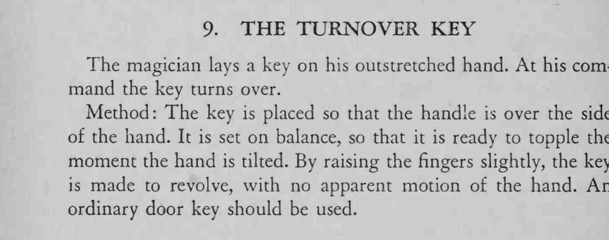

一把钥匙平放在摊开的手上，魔术师一声令下，它就自己翻了个面。
一定要用普通门钥匙，重心在柄上才容易翻。

The magician lays a key on his outstretched hand. At his command the key turns over. Method: The key is placed so that the handle is over the side of the hand. It is set on balance, so that it is ready to topple the moment the hand is tilted. By raising the fingers slightly, the key is made to revolve, with no apparent motion of the hand. An ordinary door key should be used.